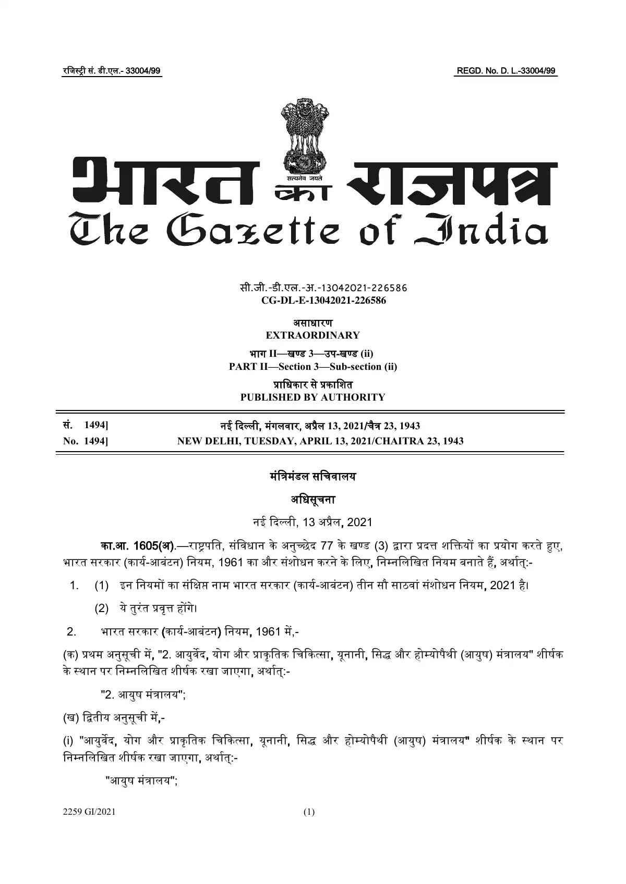
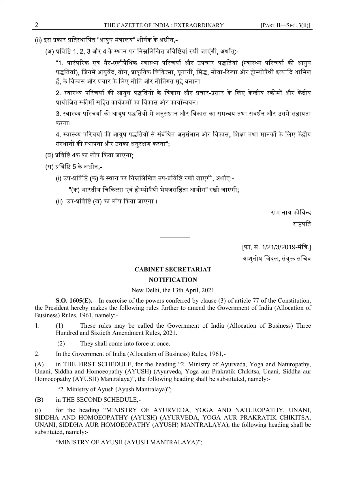
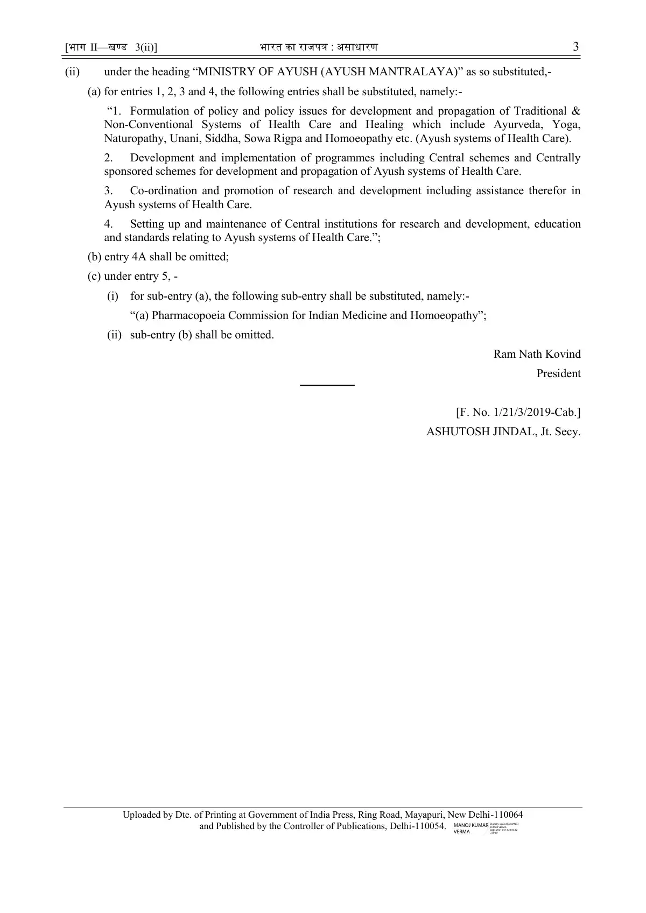

Amendment #360 (S.O. 1605(E), 2021)
6 changes: 1 to the First Schedule, 5 to the Second Schedule. 6 applied
What it did to the ministries
- renamedMinistry of Ayurveda, Yoga and Naturopathy, Unani, Siddha and Homoeopathy (AYUSH) is renamed Ministry of Ayush change 1, 2, 3, 4, 5, 6 · histories: Ayush
The order, page by page
Page 1 of 3

Page 2 of 3

12Schedule 1 › Ministry of Ayurveda, Yoga and Naturopathy, Unani, Siddha and Homoeopathy (AYUSH)
- 2. Ministry of Ayush
applied at schedule 1 › ministry 2 in the Rules after #360
Schedule 2 › MINISTRY OF AYURVEDA, YOGA AND NATUROPATHY, UNANI, SIDDHA AND HOMOEOPATHY (AYUSH)
- MINISTRY OF AYUSH
applied at schedule 2 › ministry MINISTRY OF AYUSH in the Rules after #360
Page 3 of 3

3456Schedule 2 › MINISTRY OF AYUSH › entry 1; Schedule 2 › MINISTRY OF AYUSH › entry 2; Schedule 2 › MINISTRY OF AYUSH › entry 3; Schedule 2 › MINISTRY OF AYUSH › entry 4
- 1. Formulation of policy and policy issues for development and propagation of Traditional & Non-Conventional Systems of Health Care and Healing which include Ayurveda, Yoga Naturopathy, Unani, Siddha, Sowa Rigpa and Homoeopathy etc. (Ayush systems of Health Care).
- 2. Development and implementation of programmes including Central schemes and Centrally sponsored schemes for development and propagation of Ayush systems of Health Care.
- 3. Co-ordination and promotion of research and development including assistance therefor in Ayush systems of Health Care.
- 4. Setting up and maintenance of Central institutions for research and development, education and standards relating to Ayush systems of Health Care.
applied at schedule 2 › ministry MINISTRY OF AYUSH › group_heading I › entry 1 in the Rules after #360
Schedule 2 › MINISTRY OF AYUSH › entry 4A
applied at schedule 2 › ministry MINISTRY OF AYUSH › group_heading I › entry 4A in the Rules after #360
Schedule 2 › MINISTRY OF AYUSH › entry 5 › item a
- a. Pharmacopoeia Commission for Indian Medicine and Homoeopathy
applied at schedule 2 › ministry MINISTRY OF AYUSH › group_heading I › entry 5 › item a in the Rules after #360
Schedule 2 › MINISTRY OF AYUSH › entry 5 › item b
applied at schedule 2 › ministry MINISTRY OF AYUSH › group_heading I › entry 5 › item b in the Rules after #360
How this document was read
From the Government of India (Allocation of Business) Rules, 1961 and their amendments, as published by the Cabinet Secretariat (cabsec.gov.in), read by orgpedia. The readings of the older scanned gazettes have known gaps.